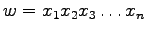
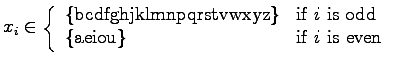
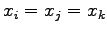
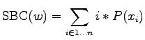

| The Problem of the Crazy Linguist |
Please, help the crazy linguist! He is trapped in his madness. He has developed a ``Spanish Beauty Criterion'' for words. It is defined as follows. Given a word w

(where n is the length of the word), he is interested in words which are formed by letters following pattern:

and, also, in his madness, he won't allow a word that actually has i, j, and k, so that  (that is, any letter can appear in the word at most two times).
Then, the ``Spanish Beauty Criterion'' (SBC) is defined as:

where P is defined as the probability of appearance of a letter in Spanish, defined by the following table:
| a | b | c | d | e | f | g | h | i | j | k | l | m |
| 12.53 | 1.42 | 4.68 | 5.86 | 13.68 | 0.69 | 1.01 | 0.70 | 6.25 | 0.44 | 0.00 | 4.97 | 3.15 |
| n | o | p | q | r | s | t | u | v | w | x | y | z |
| 6.71 | 8.68 | 2.51 | 0.88 | 6.87 | 7.98 | 4.63 | 3.93 | 0.90 | 0.02 | 0.22 | 0.90 | 0.52 |
So, given a word w, of size n, our poor linguist wants to know if this word is above or below the average of the SBC of all the words of size n that can be constructed following the above pattern and start with the same letter than w.
The input will have a first line with a number, N, the number of samples that will be entered to know if they are above or below the average. Following this first line, N lines with a word in each one (of at most seven characters each). All the input words follow the given pattern.
The output will have N lines, each line corresponding to one input word in order, showing just ``above or equal'' or ``below'', depending on the value of the SBC of that word relative to the average of those of the same size.
5 bubu terabit hacer qed loco
below above or equal above or equal above or equal above or equal